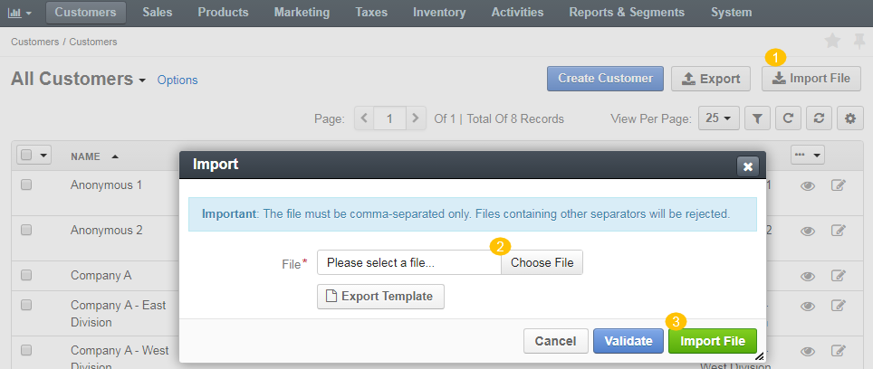

To streamline adding a massive bulk of items, like customer information, products, prices, or inventory information, you can import the bulk details from a .csv file.
To import a bulk of items:
In the main menu, navigate to menu item to import the list of the necessary data. The item list opens.
Click Import File on the top right.
In the Import dialog, click Choose File, select the .csv file you prepared, and then click Import File.

Click Export Template to download a sample .csv file with the necessary headers.
Prepare data for import: Based on the downloaded file, create your bulk information in the .csv format. Once your file is ready, click Choose File, select the prepared comma-separated values (.csv) file, and click Import File.
Validate import results: Click Validate to check your import results. If there are any Records with errors, fix them in the .csv file before starting the import.
Launch import: After successful validation, click Import File.
Click Cancel to decline the import.
Important
Interactive status messages inform about the import progress, and once the import is complete, the changes are reflected in the list upon refresh. Additionally, an email message with the import status is delivered to your mailbox.
Follow the on-screen guidance for any additional actions. For example, for the inventory template, select one of the options: a) inventory statuses only or b) detailed inventory levels.